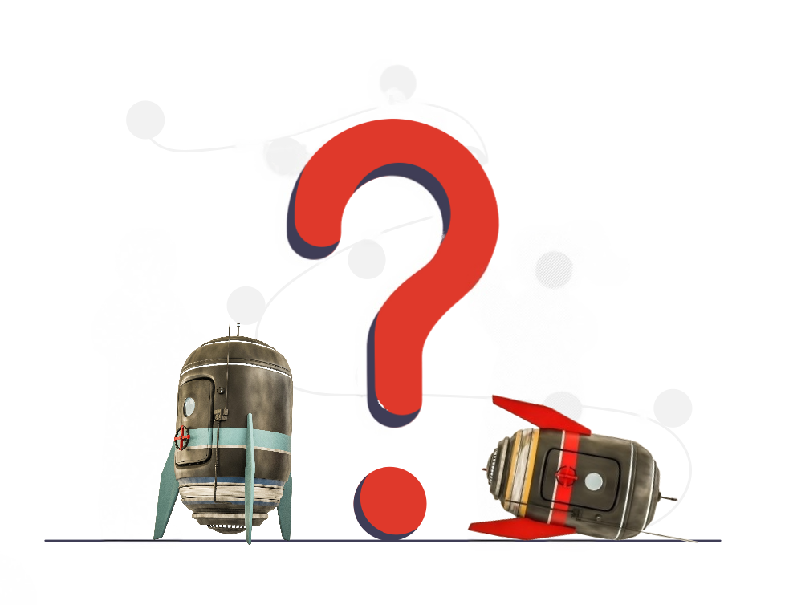

Sıkça Sorulan Sorular
Evet, zaman makinesiyle geçmişe giderek bugünkü hayatınızı
değiştirebilirsiniz, ancak dikkatli olun, her eyleminizin
geleceği nasıl etkileyeceğini düşünmek önemlidir. Sonuçta,
bir kelebeğin kanat çırpması dünyada büyük fırtınalara neden
olabilir. Yani, belki de o son sınavı tekrar almak yerine, o
kitabı biraz daha fazla çalışmak daha iyidir!
Zaman makinesini kullanmak, bazen karmaşık olabilir, ancak
endişelenmeyin, tıpkı bir DVD oynatıcıya benzer bir
kılavuzla birlikte gelir. Ama yine de, "Kullanım Kılavuzu"
kısmı biraz tarihi bilgi içerebilir, bu yüzden dikkatli
olun!
Zaman makinesini kullanmak zihinsel sağlığınıza zarar
verebilir, özellikle de zaman paradoksları ve alternatif
gerçeklikler hakkında çok düşünmeye başlarsanız. Ama yine
de, biraz delilik herkes için iyidir!
Zaman makinesiyle seyahat ederken, gittiğiniz döneme uygun
kıyafetler giymeniz önemlidir. Örneğin, Ortaçağ'a giderken,
zırh ve kılıç sizi güvende tutabilir, ancak geleceğe
giderken, yüksek teknoloji kıyafetler ve ayakkabılar daha
uygun olabilir. Ama yine de, süper kahraman kostümü her
zaman iyi bir seçenek!
Zaman makinesiyle seyahat etmek, genellikle yasal olarak
kabul edilmez, ancak zaten zaman ve mekanın dışında
olduğunuz için, gerçekten kimin umurunda olduğunu
düşünmelisiniz? Ancak, her durumda, çalıntı bir zaman
makinesi kullanmak kesinlikle yasal değildir!
Teknik olarak hayır, herhangi bir zamana seyahat
edebilirsiniz, ancak bazı dönemlerde seyahat etmek
diğerlerinden daha zor olabilir. Örneğin, dinozorların
çağına gitmek, bazı teknik zorluklarla karşılaşabilir veya
Roma İmparatorluğu döneminde bir gladyatör arenasında
savaşmak, biraz fazla tehlikeli olabilir. Ama yine de,
cesaretinizi toplayın ve dünyayı keşfedin!
Zaman makinesiyle seyahat etmek hakkında ne kadar çok
bilgiye sahip olursanız, o kadar iyi olur. Ancak, bazen, ne
kadar az bilirseniz, o kadar eğlenceli olabilir!
Zaman makinesiyle giderken, telefonunuzu kullanmak teknik
olarak mümkün olabilir, ancak çoğu zaman sinyal bulmak biraz
zor olabilir. Ancak, belki de tarihi bir selfie çekmek için
şimdi en iyi zaman olabilir!
